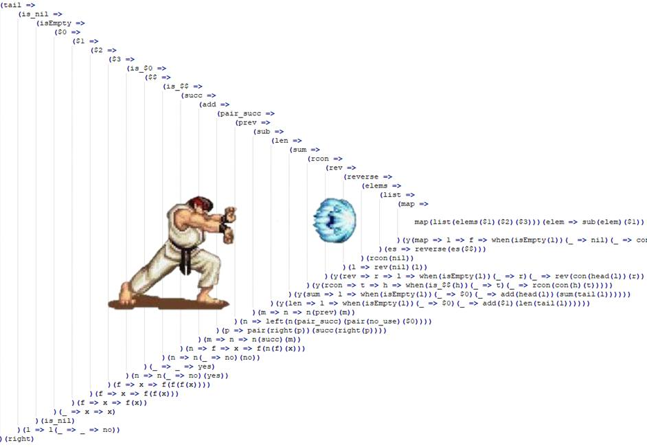

<!DOCTYPE html>
<html lang="en">
  <head>
    <meta charset="utf-8" />
    <meta name="viewport" content="width=device-width, initial-scale=1.0, maximum-scale=1.0, user-scalable=no" />

    <title>Занятие 10</title>
    <link rel="shortcut icon" href="./../favicon.ico"/>
    <link rel="stylesheet" href="./../dist/reveal.css" />
    <link rel="stylesheet" href="./../dist/theme/white.css" id="theme" />
    <link rel="stylesheet" href="./../css/highlight/zenburn.css" />
    <link rel="stylesheet" href="./../_assets/.reveal-md/styles.css" />

    <script>
      document.write('<script src="http://' + (location.host || 'localhost').split(':')[0] + ':35729/livereload.js?snipver=1"></' + 'script>');
    </script>
  </head>
  <body>
    <div class="reveal">
      <div class="slides"><section ><section data-markdown><script type="text/template">

# OTUS

## Javascript Basic

</script></section><section data-markdown><script type="text/template">

### Вопросы?

</script></section></section><section ><section data-markdown><script type="text/template">

## Очередь и стек

</script></section><section data-markdown><script type="text/template">

[Стек вызовов(call stack)](https://developer.mozilla.org/ru/docs/%D0%A1%D0%BB%D0%BE%D0%B2%D0%B0%D1%80%D1%8C/Call_stack) - это механизм для отслеживания текущего местонахождения интерпретатора в скрипте, который вызывает несколько функций типа `functions`, — какая из функций выполняется на данный момент, какие функции вызываются изнутри этой (выполняемой) функции, какая будет вызвана следующей и т. д.

</script></section><section data-markdown><script type="text/template">

**Стек** - структура в памяти (организованная как [stack](https://ru.wikipedia.org/wiki/%D0%A1%D1%82%D0%B5%D0%BA), [LIFO](https://ru.wikipedia.org/wiki/LIFO)), которая хранит указатель на выполняющуюся функцию.

</script></section><section data-markdown><script type="text/template">

- При вызове новой функции - указатель на нее помещается в стек.

- При завершении работы - указатель на функцию удаляется из стека и делается переход на следующую функцию в стеке.

Если функций в стеке не обнаружено - делается опрос очереди (поиск новых задач).

</script></section><section data-markdown><script type="text/template">

Работа с указателями в стеке происходит синхронно (ничто, кроме вызова/возврата из функций не может вклиниться в процесс).

</script></section><section data-markdown><script type="text/template">

[Размер стека органичен](https://stackoverflow.com/questions/7826992/browser-javascript-stack-size-limit), поэтому при глубокой рекурсии можно получить ошибку `RangeError: Maximum call stack size exceeded`.

Размер стека зависит [от окружения](https://2ality.com/2014/04/call-stack-size.html) (в том числе [от браузера](https://2ality.com/2014/04/call-stack-size.html))

</script></section><section data-markdown><script type="text/template">

[Визуальное представление работы стека](http://latentflip.com/loupe/?code=CmZ1bmN0aW9uIG9uZSgpIHsKICBjb25zb2xlLmxvZygnMSBzdGFydCcpOwogIHR3bygpOwogIGNvbnNvbGUubG9nKCcxIGVuZCcpOwp9CgpmdW5jdGlvbiB0d28oKSB7CiAgY29uc29sZS5sb2coJzIgc3RhcnQnKTsKICB0aHJlZSgpOwogIGNvbnNvbGUubG9nKCcyIGVuZCcpOwp9CgpmdW5jdGlvbiB0aHJlZSgpIHsKICBjb25zb2xlLmxvZygnMyBzdGFydCcpOwogIGNvbnNvbGUubG9nKCczIGVuZCcpCn0KCmZ1bmN0aW9uIG1haW4oKSB7CiAgY29uc29sZS5sb2coJ21haW4gc3RhcnQnKTsKICBmb3IgKGxldCBpID0gMDsgaTwgMTA7IGkrKykgewogICAgY29uc29sZS5sb2coaSk7CiAgfQogIHRocmVlKCk7CiAgY29uc29sZS5sb2coJ21haW4gZW5kJyk7Cn0KLy8gbWFpbigpOw%3D%3D!!!PGJ1dHRvbj5DbGljayBtZSE8L2J1dHRvbj4%3D)

</script></section><section data-markdown><script type="text/template">

### Вопросы?

</script></section><section data-markdown><script type="text/template">

[Очередь задач](https://developer.mozilla.org/ru/docs/Web/JavaScript/EventLoop#%D0%9E%D1%87%D0%B5%D1%80%D0%B5%D0%B4%D1%8C) — список задач, подлежащих обработке. Каждая задача ассоциируется с некоторой функцией и ее параметрами, которая будет вызвана, чтобы обработать эту задачу.

</script></section><section data-markdown><script type="text/template">

- Когда стек полностью освобождается, самая первая за дача извлекается из очереди и обрабатывается. (_Обработка задачи - вызов ассоциированной с ней функции с параметрами_).

- Обработка задачи заканчивается, когда стек снова становится пустым.

- Следующая задача извлекается из очереди и начинается её обработка.

</script></section><section data-markdown><script type="text/template">

Задача может быть выполнена только полностью. При этом пока выполняется задача, никакой другой код выполнен быть не может (Javascript однопоточный). Так же в процессе выполнение задачи не происходит обновление UI.

</script></section><section data-markdown><script type="text/template">

### Вопросы?

</script></section><section data-markdown><script type="text/template">

Функции, которые позволяют добавлять задачи в очередь:

- `setTimeout`
- `setInterval`

Так же отложенные задачи могут создавать Promise объекты, некоторый api и события (в том числе от пользователя).

</script></section><section data-markdown><script type="text/template">

Важно! Обе функции не задают конкретный момент времени выполнения, они задают время, в течении которого функция выполняться **не** будет.

```js [1-10]
setTimeout(() => {
  console.log("Task");
}, 5000);
```

Функция может быть выполнена через 5 секунд **или позже**.

</script></section><section data-markdown><script type="text/template">

[Визуализация](http://latentflip.com/loupe/?code=ZnVuY3Rpb24gbWFpbigpIHsKICAgIGZvciAobGV0IGkgPSAwOyBpIDwgMTA7IGkrKykgewogICAgICAgIHNldFRpbWVvdXQoZnVuY3Rpb24gdGFzaygpIHsKICAgICAgICAgICAgY29uc29sZS5sb2coJ2xvZycsIGkpCiAgICAgICAgfSwgMTAwMCk7CiAgICB9Cn0KCi8vIG1haW4oKTs%3D!!!PGJ1dHRvbj5DbGljayBtZSE8L2J1dHRvbj4%3D)

</script></section><section data-markdown><script type="text/template">

### Вопросы?

</script></section><section data-markdown><script type="text/template">

Зачем нам нужен асинхронный код?

</script></section><section data-markdown><script type="text/template">

Работа с асинхронным кодом - функции обратного вызова (callback).

**Задача** - выполнить код, по завершению [асинхронной задачи](http://latentflip.com/loupe/?code=ZnVuY3Rpb24gZGVsYXllZExvZyhpbmZvKSB7CiAgICBzZXRUaW1lb3V0KGZ1bmN0aW9uIHRhc2soKSB7CiAgICAgICAgY29uc29sZS5sb2coaW5mbyk7CiAgICB9LCAyMDAwKTsKfQoKZGVsYXllZExvZygnSGknKQ%3D%3D!!!PGJ1dHRvbj5DbGljayBtZSE8L2J1dHRvbj4%3D).

**Вариант решения:** использовать [функцию обратного вызова](http://latentflip.com/loupe/?code=ZnVuY3Rpb24gZGVsYXllZExvZyhpbmZvLCBjYikgewogICAgc2V0VGltZW91dChmdW5jdGlvbiB0YXNrKCkgewogICAgICAgIGNvbnNvbGUubG9nKGluZm8pOwogICAgICAgIGNiKCk7CiAgICB9LCAyMDAwKTsKfQoKZGVsYXllZExvZygnSGknLCBmdW5jdGlvbiBjYWxsYmFjaygpIHsKICAgIGNvbnNvbGUubG9nKCdMb2cgaXMgZG9uZScpOwp9KQ%3D%3D!!!PGJ1dHRvbj5DbGljayBtZSE8L2J1dHRvbj4%3D).

</script></section><section data-markdown><script type="text/template">

Функции обратного вызова могут быть организованы и при работе с синхронным кодом (при этом они закладывают возможность для перехода на асинхронный подход).

</script></section><section data-markdown><script type="text/template">

### Вопросы?

</script></section><section data-markdown><script type="text/template">

Проблема функций обратного вызова - callback hell



</script></section><section data-markdown><script type="text/template">

Вариант решения - использование [интерфейса Promise](https://promisesaplus.com/).

Интерфейс может иметь [разные реализации](https://caniuse.com/?search=Promise), они совместимы друг с другом, если соответствуют стандарту.

</script></section><section data-markdown><script type="text/template">

- `promise`- это объект или функция с методом `then` (обычно еще и `catch`), поведение которого соответствует спецификации
- `promise` может обладать одним из трех состояний - pending, rejected, resolved
- `promise` может изменить свое состояние только один раз
- метод `then` возвращает новый `promise`, со "значением" в виде результата работы функции обратного вызова
- метод `then` вызывает функцию обратного вызова (первый параметр), когда promise переходит в состояние resolved
- метод `catch` вызывает функцию обратного вызова, когда promise переходит в состояние rejected (тоже самое про второй параметр `then`)

</script></section><section data-markdown><script type="text/template">

```js [1-30]
let promise = new Promise((resolve, reject) => {
  resolve(1);
});

promise.then((value) => console.log("value from promise", value));
```

</script></section><section data-markdown><script type="text/template">

```js [1-30]
let promise = new Promise((resolve, reject) => {
  resolve(1);
});

let promise2 = promise.then((value) => value * 2);
let promise3 = promise2.then((value) => value + 3);

promise3.then((value) => console.log("value from promise3", value));
```

</script></section><section data-markdown><script type="text/template">

```js [1-30]
let promise = new Promise((resolve, reject) => {
  resolve(1);
})
  .then((value) => value * 2)
  .then((value) => value + 3)
  .then((value) => console.log("value from promise", value));
```

</script></section><section data-markdown><script type="text/template">

```js [1-30]
let promise = new Promise((resolve, reject) => {
  reject(new Error("Some error"));
});

promise
  .then((value) => console.log("value from promise", value))
  .catch((error) => console.log("Error from promise", error));
```

</script></section><section data-markdown><script type="text/template">

```js [1-30]
let promise = new Promise((resolve, reject) => {
  resolve(1);
  reject(new Error("Some error"));
  resolve(2);
});

promise
  .then((value) => console.log("value from promise", value))
  .catch((error) => console.log("Error from promise", error));
```

</script></section><section data-markdown><script type="text/template">

### Вопросы?

</script></section><section data-markdown><script type="text/template">

```js [1-30]
console.log(1);
let promise = new Promise((resolve, reject) => {
  throw new Error("Some error inside promise");
});
console.log(2);

promise
  .then((value) => console.log("value from promise", value))
  .catch((error) => console.log("Error from promise", error));
```

</script></section><section data-markdown><script type="text/template">

Важно! у promise нет способов получить значение, кроме как через callback

</script></section><section data-markdown><script type="text/template">

### Вопросы?

</script></section><section data-markdown><script type="text/template">

Объявление `async function` определяет асинхронную функцию, которая возвращает объект [AsyncFunction](https://developer.mozilla.org/ru/docs/Web/JavaScript/Reference/Global_Objects/AsyncFunction).

После вызова функция async возвращает Promise. Когда результат был получен, Promise завершается, возвращая полученное значение. Когда функция async выбрасывает исключение, Promise ответит отказом с выброшенным (throws) значением.

</script></section><section data-markdown><script type="text/template">

Функция async может содержать выражение await, которое приостанавливает выполнение функции async и ожидает ответа от переданного Promise, затем возобновляя выполнение функции async и возвращая полученное значение.

Ключевое слово await допустимо только в асинхронных функциях. В другом контексте вы получите ошибку SyntaxError.

</script></section><section data-markdown><script type="text/template">

```js [1-30]
async function x() {
  return 1;
}

console.log(x()); // ?
```

</script></section><section data-markdown><script type="text/template">

```js [1-30]
let promise = new Promise((resolve) => setTimeout(resolve, 2000, 4));

promise.then((value) => console.log("Value from then", value));

async function af() {
  const value = await promise;
  console.log("Value from async function", value);
}
af();
```

</script></section><section data-markdown><script type="text/template">

Важно! В `async` функциях reject у promise выбрасывает исключение.

</script></section><section data-markdown><script type="text/template">

```js [1-30]
let promise = new Promise((resolve) =>
  setTimeout(reject, 2000, new Error("some error"))
);

async function af() {
  console.log(1);
  const value = await promise;
  console.log(value);
  console.log(2);
}

console.log(3);
af();
console.log(4);
```

</script></section><section data-markdown><script type="text/template">

### Вопросы?

</script></section><section data-markdown><script type="text/template">

[Задачи в очереди называют **макро**задачами. Промисы относят к **микро**задачам](https://learn.javascript.ru/event-loop)

Сразу после каждой макрозадачи движок исполняет все задачи из очереди микрозадач перед тем, как выполнить следующую макрозадачу или отобразить изменения на странице, или сделать что-то ещё.

Все микрозадачи завершаются до обработки каких-либо событий или рендеринга, или перехода к другой макрозадаче.

</script></section><section data-markdown><script type="text/template">

Выполнение обработчика .then/catch/finally или работа async функции (это форма обработки promise) являются **микро**задачами

</script></section><section data-markdown><script type="text/template">

Алгоритм обработки задач:

1. Выбрать и исполнить старейшую задачу из очереди макрозадач (например, «script»).
1. Исполнить все микрозадачи:
   - Пока очередь микрозадач не пуста: - Выбрать из очереди и исполнить старейшую микрозадачу
1. Отрисовать изменения страницы, если они есть.
1. Если очередь макрозадач пуста – подождать, пока появится макрозадача.
1. Перейти к шагу 1.

</script></section><section data-markdown><script type="text/template">

```js [1-30]
setTimeout(() => console.log(1), 0);

Promise.resolve().then(() => console.log(2));

console.log(3);
// ?
```

</script></section><section data-markdown><script type="text/template">

### Вопросы?

</script></section></section><section ><section data-markdown><script type="text/template">

Проверим понимание

</script></section><section data-markdown><script type="text/template">

```js [1-30]
console.log(1);
setTimeout(function () {
  console.log(2);
}, 1000);
setTimeout(function () {
  console.log(3);
}, 0);
console.log(4);
// ??
```

</script></section><section data-markdown><script type="text/template">

```js [1-30]
function say(a) {
  console.log(a);
}
say(1);
setTimeout(say(2), 5000);
setTimeout(function () {
  say(3);
}, 1000);
setTimeout(say, 2000, 4);
// ?
```

</script></section><section data-markdown><script type="text/template">

```js [1-30]
let i;
let done = false;
function someWaitingStuff() {
  i++;
  if (done) {
    console.log("Done", i);
  }
}

setTimeout(() => {
  done = true;
}, 1000);

while (done !== true) {
  someWaitingStuff();
}
//?
```

</script></section><section data-markdown><script type="text/template">

```js [1-30]
// The following recursive code will cause a stack overflow if the array list is too large.
// How can you fix this and still retain the recursive pattern?
let list = readHugeList();
let nextListItem = function () {
  let item = list.pop();
  if (item) {
    // process the list item...
    nextListItem();
  }
};
```

</script></section><section data-markdown><script type="text/template">

```js [1-30]
(function () {
  console.log(1);
  setTimeout(() => console.log(2), 1000);
  setTimeout(() => console.log(3), 0);
  Promise.resolve(true).then(() => console.log(4));
  console.log(5);
})();
```

</script></section><section data-markdown><script type="text/template">

```js [1-30]
try {
  setTimeout(function () {
    throw new Error();
  }, 1000);
} catch (e) {
  alert(e);
}
```

</script></section></section><section  data-markdown><script type="text/template">

Дополнительные материалы:

- [Рекурсия и стек](https://learn.javascript.ru/recursion)
- [Промисы, async/await](https://learn.javascript.ru/async)
- [Событийный цикл: микрозадачи и макрозадачи](https://learn.javascript.ru/event-loop)
- [YT: Про цикл событий в JavaScript или "как на самом деле работает асинхронность"?](https://www.youtube.com/watch?v=8cV4ZvHXQL4)
- [Loupe](http://latentflip.com/loupe/)
- [Параллельная модель и цикл событий](https://developer.mozilla.org/ru/docs/Web/JavaScript/EventLoop#%D0%9E%D1%87%D0%B5%D1%80%D0%B5%D0%B4%D1%8C)
- [Асинхронный JavaScript](https://developer.mozilla.org/ru/docs/Learn/JavaScript/Asynchronous)
</script></section></div>
    </div>

    <script src="./../dist/reveal.js"></script>

    <script src="./../plugin/markdown/markdown.js"></script>
    <script src="./../plugin/highlight/highlight.js"></script>
    <script src="./../plugin/zoom/zoom.js"></script>
    <script src="./../plugin/notes/notes.js"></script>
    <script src="./../plugin/math/math.js"></script>
    <script>
      function extend() {
        var target = {};
        for (var i = 0; i < arguments.length; i++) {
          var source = arguments[i];
          for (var key in source) {
            if (source.hasOwnProperty(key)) {
              target[key] = source[key];
            }
          }
        }
        return target;
      }

      // default options to init reveal.js
      var defaultOptions = {
        controls: true,
        progress: true,
        history: true,
        center: true,
        transition: 'default', // none/fade/slide/convex/concave/zoom
        plugins: [
          RevealMarkdown,
          RevealHighlight,
          RevealZoom,
          RevealNotes,
          RevealMath
        ]
      };

      // options from URL query string
      var queryOptions = Reveal().getQueryHash() || {};

      var options = extend(defaultOptions, {"slideNumber":true,"hash":true,"history":false,"backgroundTransition":"fade","width":"80%"}, queryOptions);
    </script>


    <script>
      Reveal.initialize(options);
    </script>
  </body>
</html>
